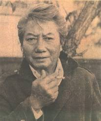

Bạt

huở ấy, khi rượu nho ủ kín tự mùa thu bắt đầu cựa quậy lên men; khi vùng trời Địa Trung Hải vừa rũ sạch bụi xám mây cuối mùa đông để trở về máu thiên thanh nguyên thuỷ; khi con trai và con gái thành Athènes nhìn nhau để chọn màu áo, nắm tay nhau nhịp bước ra khỏi cổng thành, má au hồng mà nghe mùa xuân rạo rực từ lòng huyết quản; khi đồi, núi, sông biển và lộc cành nho, tất cả tự động quay cuồng trong một CƠN BAY mênh mông vô tận; thì tự ngàn xưa, hồn hoang thần Dionysos cũng tự lòng đất bước ra khỏi cõi u minh thần thoại, thơ thẩn đầu ngọn cỏ, vương vất nơi cành cây thầm ước tái sinh, đợi giờ, nhập thể. Trong CƠN SAY đó, nghệ thuật thành hình.
K.
Chị Nguyễn kính,
… Chưa hết. Người ta lại vừa nêu thêm lên một thuyết nữa. Thuyết cơ cấu. Và những danh từ riêng Lévi–Strauss, Roland Barthes, Starobinski… cộng với những danh từ chung mang một âm hưởng ỡm ờ khoa học degré zéro de l’écriture, texte limite, signifiant, signifié, habitat ennuchoide, viriloide… tất cả đã đồng loã lập thành một thứ ngôn ngữ thời thượng. Tôi có cảm tưởng, tựu trung, người ta không tiến không lui, người ta vẫn đứng nguyên vị ở cái ngã tư bế tắc mà cả hai đường phải trái đã tự lâu đều cắm cao tấm bảng một chiều. Một chiều Marx và một chiều Frend. Lucien Goldman và Charles Mauron. Tựu trung, cái mà người ta muốn khám phá trong tác phẩm nghệ thuật, tôi nghĩ rằng cái đó vẫn ở đó, vẫn như thế, người đạt tới vụt đến, vụt đi, đến đó, đi đó. Như lai.
… Tôi nghĩ rằng lũ chúng ta chỉ là một lũ người tuy gần sạch nghiệp nhưng vẫn còn bị ám ảnh bởi một cái gì – một cảm giác mơ hồ về mọi hành-động-đã-lỡ, một gợn tâm tư, một hình-như-kỷ-niệm Ở ngay hôm nay nảy mầm trong yên lặng, ở một kiếp nào dây dưa đến mãi hôm nay. Hình như, hình như tận cùng sâu thẳm tâm thức chúng ta, một vài mảnh hồn hoang vẫn còn ẩn náu, bởi còn quyến luyến hương và vị cuộc sống mà chưa chịu đầu thai. Có những đêm, tròng mắt muốn khép kín bưng mà vẫn mở rộng, hút dán vào cái hình thù quái đản một đôi thạch sùng quấn quít, ta bỗng thấy bồng bềnh lạc vào một bến nước lạ, lạ đấy mà lại như quen. Có những nửa khuya, bỗng dưng lọt kịp được vào cái nhịp xao xuyến tâm thức chúng ta, để trong một sát-na ngỡ ngàng, ta ngẩn ngơ thấy ta không còn hẳn là ta, ta hình như đã là một cái gì, ta rồi ra hình như sẽ phải là một cái gì. Ta tưởng ta là Đường Minh Hoàng.
Đó. Chị thấy không? Cái đó… chính là cái đó. Và đó cũng là cái khổ của chúng ta. Chúng ta bị ma làm. Chúng ta bị tà ốp.
Quên? Giơ cao bàn tay mặt để tuyên thệ suốt đời lẽo đẽo tuân theo một nếp kỷ luật, khoác một chiếc áo đen, xuống một mớ tóc, đẩy một con sào cho bên này chồng chềnh nối tiếp bến khác, để luôn luôn núi sông người và cây cỏ biến áo trước đôi mắt lúc nào cũng muốn ngơ ngơ ngác ngác, ngồi xuống theo một thế kiết già để lọt được vào cái trống rỗng của thiền, hay yêu, hay thù, hoặc ngập lặn trong nhầy nhụa của truỵ lạc – chị Nguyễn ạ, có lúc nào con người xao lãng cái công cuộc khám phá phương cách để quên? Nhưng tôi nghĩ rằng quên chỉ là thoả hiệp, quên không dứt khoát, quên không giải quyết. Vấn đề sẽ còn nguyên vẹn – nỗi tấm tức những mảnh hồn hoang lẩn thẩn trong ta -, vấn đề sẽ lại đặt ra, ở một giây phút nào đó ngay trong hiện kiếp, ở một kiếp nào đó, nghiêm trọng hơn nhiều. Phải giải quyết, nghĩa là thanh toán cái đám u hồn tà ma ám ảnh chúng ta. Chúng ta có thể làm được việc đó, chính chúng ta, hình như chỉ chúng ta. Bằng viết. Viết như một truy kích tà ma. Viết như một vận dụng quyền uy phù thuỷ mà âm binh là những ngôn từ. Tôi biết rằng đã có những phù thuỷ vì non tay mà bị vật ngã bởi chính âm binh của mình. Một người phù thuỷ tự trọng phải có gan dấn thân vào một hành trình không thường (bắt buộc, vì trong trường hợp chúng ta, phù thuỷ với con bệnh lại chỉ là một) nơi xuất phát là vùng ý thức sáng rực mặt trời manh nha tự cái riêng biệt của hiện tại hực sôi thế sự, (hẻm sâu tiềm thức đặc quạnh ẩn ức chỉ là trạm nghỉ chân), nơi tới chính là trung tâm cơn lốc xoáy trôn ốc của mênh mang vô thức nguyên thuỷ mà hấp lực – cường độ tương xứng nhịp rung động tâm thức chúng ta – hấp lực có thể nghiền nát tất cả quá khứ lẫn vị lai, bóp vụn tất cả hình hài của vạn vật sinh sinh hoá hoá. Người phù thuỷ giữ vững tay quyết, mở ngỏ sáu giác của mình, chiêu dụ cơn lốc nhập vào thân xác, choáng váng đảo đồng, trở thành cơn lốc, để rồi giữa cơn “tuý luý càn khôn”, đánh vần từng tiếng, xếp lại thành câu, kiến trúc những thế giới rất thực mà lạ hoắc, xây dựng những vũ trụ hoang đường nhưng quen thuộc, nhào nặn những nhân vật tuy quái đản mà lại rất người, bố trí những thế sống vừa đặc biệt lại vừa thường nhật. Để hình thành cái mà người đời thường gọi là tác phẩm.
Tôi không cười khi nghĩ rằng chúng ta là một lũ Thượng đế. Bởi chúng ta sáng tạo.
Tôi không cười khi nghĩ rằng sau đó, chúng ta trở thành một lũ A-la-hán. Bởi chúng ta đã vượt ra khỏi cái vòng kiềm toả của nhân duyên bám rễ tự những hằng hà sa số kiếp nào. Bởi những u hồn lẩn quất trong ta, như những con trùng vi ti gặp sức đối kháng trụ sinh, khi con-đồng-phù-thuỷ đã tỉnh cơn say choáng váng, bút say dừng lại, tác phẩm thành hình, những u hồn đó sẽ ôm nhau than khóc, sẽ bồng bế rủ nhau đi khỏi thân xác chúng ta.
… Như vậy, trước hết và ở ngay ý hướng bắt đầu, ngay nơi căn bản, viết chỉ là vì mình. Nhưng nếu người đọc cũng thấy ngây ngất lây men tuý bút, nếu đọc có thể trở thành một nhận diện tà ma ở ngay nơi thân xác người đọc, thì… đó không phải là lỗi mà cùng không phải là công của người viết. Có phải không, chị Nguyễn?
… Tôi chắc bây giờ thì chị đã hiểu tại sao tôi lại dùng danh từ tuý bút. Tuý chứ không tuỳ. Chị thấy không, tôi đâu có lập dị?
1-1971

Vũ Khắc Khoan sinh năm 1917 tại Hà Nội. Tốt nghiệp đại học. Giáo sư tại các trường trung học Nguyễn Trãi (Hà Nội) và Chu Văn An. Viết văn, soạn kịch, dựng kịch, làm báo. Cùng với một số bạn hữu, thành lập nhóm văn hoá Quan Điểm, xây dựng ý thức hệ tiểu tư sản trí thức. Hiện là giáo sư tại các Đại học Vạn Hạnh, Đại học Văn khoa Sài Gòn, Đại học Văn khoa Đà Lạt, Đại học Sư phạm, Trưởng ngành Kịch nghệ tại Trường Quốc gia Kịch nghệ và Âm nhạc, chủ biên nguyệt san Vấn Đề. Mơ Hương Cảng, tác phẩm thứ tám đã xuất bản của ông, là một tuyển lọc những ý tưởng trọng yếu ông nghiền ngẫm đọc hai mươi năm về thế sống và nghệ thuật – hai mặt cạnh mật thiết liên quan của một toàn khối là đời sống.
Tác phẩm của Vũ Khắc Khoan:
Đã in:
- Thằng Cuội ngồi gốc cây đa, lộng ngôn
- Giao thừa, kịch
- Hậu trường, kịch
- Thần Tháp Rùa, truyện
- Thành Cát Tư Hãn, kịch
- Vở chèo Quan Âm Thị Kính, khảo luận
- Ngộ nhận, lộng ngôn
- Mơ Hương Cảng, tuý bút
Sẽ in: Những người không chịu chết, kịch